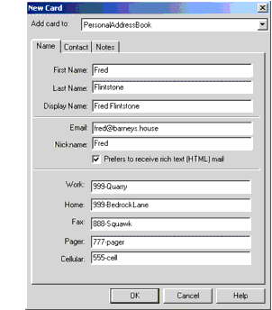

Generating XML from an Arbitrary Data Structure
In this section, you'll use XSLT to convert an arbitrary data structure to XML.
Here is an outline of the process:
- You'll modify an existing program that reads the data, to make it generate SAX events. (Whether that program is a real parser or simply a data filter of some kind is irrelevant for the moment.)
- You'll then use the SAX "parser" to construct a
SAXSourcefor the transformation.- You'll use the same
StreamResultobject you created in the last exercise so that you can see the results. (But note that you could just as easily create aDOMResultobject to create a DOM in memory.)- You'll wire the source to the result using the transformer object to make the conversion.
For starters, you need a data set you want to convert and a program capable of reading the data. In the next two sections, you'll create a simple data file and a program that reads it.
Creating a Simple File
We'll start by creating a data set for an address book. You can duplicate the process, if you like, or simply use the data stored in
PersonalAddressBook.ldif.The file shown here was produced by creating a new address book in Netscape Messenger, giving it some dummy data (one address card), and then exporting it in LDIF format.
Note: LDIF stands for LDAP Data Interchange Format. LDAP, in turn, stands for Lightweight Directory Access Protocol. I prefer to think of LDIF as the "Line Delimited Interchange Format", because that is pretty much what it is.
Figure 7-1 shows the address book entry that was created.

Exporting the address book produces a file like the one shown next. The parts of the file that we care about are shown in bold.
dn: cn=Fred Flintstone,mail=fred@barneys.house modifytimestamp: 20010409210816Z cn: Fred Flintstonexmozillanickname: Fred mail: Fred@barneys.house xmozillausehtmlmail: TRUE givenname: Fred sn: Flintstone telephonenumber: 999-Quarry homephone: 999-BedrockLane facsimiletelephonenumber: 888-Squawk pagerphone: 777-pager cellphone: 555-cellxmozillaanyphone: 999-Quarry objectclass: top objectclass: personNote that each line of the file contains a variable name, a colon, and a space followed by a value for the variable. The
snvariable contains the person's surname (last name) and the variablecncontains the DisplayName field from the address book entry.Creating a Simple Parser
The next step is to create a program that parses the data.
Note: The code discussed in this section is in
AddressBookReader01.java. The output is inAddressBookReaderLog01.txt.
The text for the program is shown next. It's an absurdly simple program that doesn't even loop for multiple entries because, after all, it's only a demo!
import java.io.*; public class AddressBookReader { public static void main(String argv[]) { // Check the arguments if (argv.length != 1) { System.err.println ( "Usage: java AddressBookReader filename"); System.exit (1); } String filename = argv[0]; File f = new File(filename); AddressBookReader01 reader = new AddressBookReader01(); reader.parse(f); } /** Parse the input */ public void parse(File f) { try { // Get an efficient reader for the file FileReader r = new FileReader(f); BufferedReader br = new BufferedReader(r); // Read the file and display its contents. String line = br.readLine(); while (null != (line = br.readLine())) { if (line.startsWith("xmozillanickname: ")) break; } output("nickname", "xmozillanickname", line); line = br.readLine(); output("email", "mail", line); line = br.readLine(); output("html", "xmozillausehtmlmail", line); line = br.readLine(); output("firstname","givenname", line); line = br.readLine(); output("lastname", "sn", line); line = br.readLine(); output("work", "telephonenumber", line); line = br.readLine(); output("home", "homephone", line); line = br.readLine(); output("fax", "facsimiletelephonenumber", line); line = br.readLine(); output("pager", "pagerphone", line); line = br.readLine(); output("cell", "cellphone", line); } catch (Exception e) { e.printStackTrace(); } } void output(String name, String prefix, String line) { int startIndex = prefix.length() + 2; // 2=length of ": " String text = line.substring(startIndex); System.out.println(name + ": " + text); } }This program contains three methods:
main
The
mainmethod gets the name of the file from the command line, creates an instance of the parser, and sets it to work parsing the file. This method will be going away when we convert the program into a SAX parser. (That's one reason for putting the parsing code into a separate method.)parse
This method operates on the
Fileobject sent to it by themainroutine. As you can see, it's about as simple as it can get. The only nod to efficiency is the use of aBufferedReader, which can become important when you start operating on large files.output
The
outputmethod contains the logic for the structure of a line. It takes three arguments. The first argument gives the method a name to display, so we can outputhtmlas a variable name, instead ofxmozillausehtmlmail. The second argument gives the variable name stored in the file (xmozillausehtmlmail). The third argument gives the line containing the data. The routine then strips off the variable name from the start of the line and outputs the desired name, plus the data.Running this program on
PersonalAddressBook.ldifproduces this output:nickname: Fred email: Fred@barneys.house html: TRUE firstname: Fred lastname: Flintstone work: 999-Quarry home: 999-BedrockLane fax: 888-Squawk pager: 777-pager cell: 555-cellI think we can all agree that this is a bit more readable.
Modifying the Parser to Generate SAX Events
The next step is to modify the parser to generate SAX events so that you can use it as the basis for a
SAXSourceobject in an XSLTtransform.
Note: The code discussed in this section is in
AddressBookReader02.java.
Start by importing the additional classes you'll need:
Next, modify the application so that it extends
XmlReader. That change converts the application into a parser that generates the appropriate SAX events.Now remove the
mainmethod. You won't need it any more.public static void main(String argv[]) { // Check the arguments if (argv.length != 1) { System.err.println ("Usage: Java AddressBookReader filename"); System.exit (1); } String filename = argv[0]; File f = new File(filename); AddressBookReader02 reader = new AddressBookReader02(); reader.parse(f);}Add some global variables that will come in handy in a few minutes:
public class AddressBookReader implements XMLReader {ContentHandler handler; // We're not doing namespaces, and we have no // attributes on our elements. String nsu = ""; // NamespaceURI Attributes atts = new AttributesImpl(); String rootElement = "addressbook"; String indent = "\n "; // for readability!The SAX
ContentHandleris the object that will get the SAX events generated by the parser. To make the application into anXmlReader, you'll define asetContentHandlermethod. Thehandlervariable will hold a reference to the object that is sent whensetContentHandleris invoked.And when the parser generates SAX element events, it will need to supply namespace and attribute information. Because this is a simple application, you're defining null values for both of those.
You're also defining a root element for the data structure (
addressbook) and setting up an indent string to improve the readability of the output.Next, modify the
parsemethod so that it takes anInputSource(rather than aFile) as an argument and account for the exceptions it can generate:Now make the following changes to get the reader encapsulated by the
InputSourceobject:try { // Get an efficient reader for the fileFileReader r = new FileReader(f);java.io.Reader r = input.getCharacterStream(); BufferedReader Br = new BufferedReader(r);
Note: In the next section, you'll create the input source object and what you put in it will, in fact, be a buffered reader. But the
AddressBookReadercould be used by someone else, somewhere down the line. This step makes sure that the processing will be efficient, regardless of the reader you are given.
The next step is to modify the
parsemethod to generate SAX events for the start of the document and the root element. Add the following highlighted code to do that:/** Parse the input */ public void parse(InputSource input) ... { try { ... // Read the file and display its contents. String line = br.readLine(); while (null != (line = br.readLine())) { if (line.startsWith("xmozillanickname: ")) break; }if (handler==null) { throw new SAXException("No content handler"); } handler.startDocument(); handler.startElement(nsu, rootElement, rootElement, atts);output("nickname", "xmozillanickname", line); ... output("cell", "cellphone", line);handler.ignorableWhitespace("\n".toCharArray(), 0, // start index 1 // length ); handler.endElement(nsu, rootElement, rootElement);handler.endDocument();} catch (Exception e) { ...Here, you check to make sure that the parser is properly configured with a
ContentHandler. (For this application, we don't care about anything else.) You then generate the events for the start of the document and the root element, and you finish by sending the end event for the root element and the end event for the document.A couple of items are noteworthy at this point:
- We haven't bothered to send the
setDocumentLocatorevent, because that is optional. Were it important, that event would be sent immediately before thestartDocumentevent.- We've generated an
ignorableWhitespaceevent before the end of the root element. This, too, is optional, but it drastically improves the readability of the output, as you'll see in a few moments. (In this case, the whitespace consists of a single newline, which is sent in the same way that characters are sent to thecharactersmethod: as a character array, a starting index, and a length.)Now that SAX events are being generated for the document and the root element, the next step is to modify the
outputmethod to generate the appropriate element events for each data item. Make the following changes to do that:void output(String name, String prefix, String line) throws SAXException { int startIndex = prefix.length() + 2; // 2=length of ": " String text = line.substring(startIndex);System.out.println(name + ": " + text);int textLength = line.length() - startIndex; handler.ignorableWhitespace(indent.toCharArray(), 0, // start index indent.length() ); handler.startElement(nsu, name, name /*"qName"*/, atts); handler.characters(line.toCharArray(), startIndex, textLength); handler.endElement(nsu, name, name);}Because the
ContentHandlermethods can sendSAXExceptions back to the parser, the parser must be prepared to deal with them. In this case, we don't expect any, so we'll simply allow the application to fail if any occur.You then calculate the length of the data, again generating some ignorable whitespace for readability. In this case, there is only one level of data, so we can use a fixed-indent string. (If the data were more structured, we would have to calculate how much space to indent, depending on the nesting of the data.)
Note: The indent string makes no difference to the data but will make the output a lot easier to read. When everything is working, try generating the result without that string! All the elements will wind up concatenated end to end:
<addressbook><nickname>Fred</nickname><email>...
Next, add the method that configures the parser with the
ContentHandlerthat is to receive the events it generates:void output(String name, String prefix, String line) throws SAXException { ... } /** Allow an application to register a content event handler. */public void setContentHandler(ContentHandler handler) { this.handler = handler; }/** Return the current content handler. */public ContentHandler getContentHandler() { return this.handler; }Several other methods must be implemented in order to satisfy the
XmlReaderinterface. For the purpose of this exercise, we'll generate null methods for all of them. For a production application, though, you may want to consider implementing the error handler methods to produce a more robust application. For now, add the following highlighted code to generate null methods for them:/** Allow an application to register an error event handler. */public void setErrorHandler(ErrorHandler handler) { }/** Return the current error handler. */public ErrorHandler getErrorHandler() { return null; }Then add the following highlighted code to generate null methods for the remainder of the
XmlReaderinterface. (Most of them are of value to a real SAX parser but have little bearing on a data-conversion application like this one.)/** Parse an XML document from a system identifier (URI). */public void parse(String systemId) throws IOException, SAXException { }/** Return the current DTD handler. */public DTDHandler getDTDHandler() { return null; }/** Return the current entity resolver. */public EntityResolver getEntityResolver() { return null; }/** Allow an application to register an entity resolver. */public void setEntityResolver(EntityResolver resolver) { }/** Allow an application to register a DTD event handler. */public void setDTDHandler(DTDHandler handler) { }/** Look up the value of a property. */public Object getProperty(String name) { return null; }/** Set the value of a property. */public void setProperty(String name, Object value) { }/** Set the state of a feature. */public void setFeature(String name, boolean value) { }/** Look up the value of a feature. */public boolean getFeature(String name) { return false; }Congratulations! You now have a parser you can use to generate SAX events. In the next section, you'll use it to construct a SAX source object that will let you transform the data into XML.
Using the Parser as a SAXSource
Given a SAX parser to use as an event source, you can (easily!) construct a transformer to produce a result. In this section, you'll modify the
TransformerAppyou've been working with to produce a stream output result, although you could just as easily produce a DOM result.
Note: The code discussed in this section is in
TransformationApp04.java. The results of running it are inTransformationLog04.txt.
Make sure that you put the
AddressBookReaderaside and open theTransformationApp. The work you do in this section affects theTransformationApp! (They look similar, so it's easy to start working on the wrong one.)Start by making the following changes to import the classes you'll need to construct a
SAXSourceobject. (You won't need the DOM classes at this point, so they are discarded here, although leaving them in doesn't do any harm.)import org.xml.sax.SAXException; import org.xml.sax.SAXParseException;import org.xml.sax.ContentHandler; import org.xml.sax.InputSource;import org.w3c.dom.Document; import org.w3c.dom.DOMException;...import javax.xml.transform.dom.DOMSource;import javax.xml.transform.sax.SAXSource;import javax.xml.transform.stream.StreamResult;Next, remove a few other holdovers from our DOM-processing days, and add the code to create an instance of the
AddressBookReader:public class TransformationApp {// Global value so it can be ref'd by the tree-adapter static Document document;public static void main(String argv[]) { ...DocumentBuilderFactory factory = DocumentBuilderFactory.newInstance();//factory.setNamespaceAware(true); //factory.setValidating(true);// Create the sax "parser".AddressBookReader saxReader = new AddressBookReader();try { File f = new File(argv[0]);DocumentBuilder builder = factory.newDocumentBuilder(); document = builder.parse(f);Guess what--you're almost finished. Just a couple of steps to go. Add the following highlighted code to construct a
SAXSourceobject:// Use a Transformer for output ... Transformer transformer = tFactory.newTransformer();// Use the parser as a SAX source for input FileReader fr = new FileReader(f); BufferedReader br = new BufferedReader(fr); InputSource inputSource = new InputSource(br); SAXSource source = new SAXSource(saxReader, inputSource);StreamResult result = new StreamResult(System.out); transformer.transform(source, result);Here, you construct a buffered reader (as mentioned earlier) and encapsulate it in an input source object. You then create a
SAXSourceobject, passing it the reader and theInputSourceobject, and pass that to the transformer.When the application runs, the transformer configures itself as the
ContentHandlerfor the SAX parser (theAddressBookReader) and tells the parser to operate on theinputSourceobject. Events generated by the parser then go to the transformer, which does the appropriate thing and passes the data on to the result object.Finally, remove the exceptions you no longer need to worry about, because the
TransformationAppno longer generates them:catch (SAXParseException spe) { // Error generated by the parser System.out.println("\n** Parsing error" + ", line " + spe.getLineNumber() + ", uri " + spe.getSystemId()); System.out.println(" " + spe.getMessage() ); // Use the contained exception, if any Exception x = spe; if (spe.getException() != null) x = spe.getException(); x.printStackTrace(); } catch (SAXException sxe) { // Error generated by this application // (or a parser-initialization error) Exception x = sxe; if (sxe.getException() != null) x = sxe.getException(); x.printStackTrace(); } catch (ParserConfigurationException pce) { // Parser with specified options can't be built pce.printStackTrace();} catch (IOException ioe) { ...You're finished! You have now created a transformer that uses a
SAXSourceas input and produces aStreamResultas output.Doing the Conversion
Now run the application on the address book file. Your output should look like this:
<?xml version="1.0" encoding="UTF-8"?> <addressbook> <nickname>Fred</nickname> <email>fred@barneys.house</email> <html>TRUE</html> <firstname>Fred</firstname> <lastname>Flintstone</lastname> <work>999-Quarry</work> <home>999-BedrockLane</home> <fax>888-Squawk</fax> <pager>777-pager</pager> <cell>555-cell</cell> </addressbook>You have now successfully converted an existing data structure to XML. And it wasn't even very hard. Congratulations!
All of the material in The J2EE(TM) 1.4 Tutorial is copyright-protected and may not be published in other works without express written permission from Sun Microsystems.